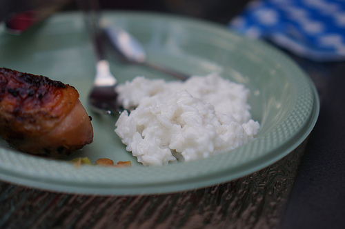
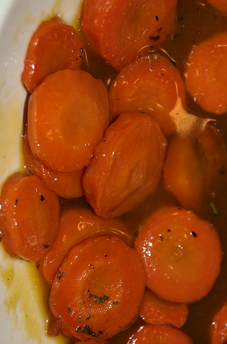

Welcome to Side Dish Spotlight! Looking to discover some recipes that will spice up chicken or fillet of fish? Use this program to find a side dish recipe that will spark your taste buds using only 5 ingredients!
Take a short quiz and we will suggest a side dish for you!
Let us get to know what you are craving!
I am looking for something:
Photo by Another Pint Please....
Tap on each step to reveal instructions.
Preheat an outdoor grill for medium-high heat and lightly oil the grate.
Whisk brown sugar and cinnamon together in a bowl. Pour sugar mixture into a large resealable plastic bag. Place pineapple wedges in bag and shake to coat each wedge.
Grill pineapple wedges on the preheated grill until heated through, 3 to 5 minutes per side.
Photo by my_amii.
Tap on each step to reveal instructions.
Heat bacon grease in a skillet over medium heat. Cook and stir onion and garlic in the hot bacon grease until onions are softened, 5 to 7 minutes.
Mash pinto beans and cumin into onion mixture using a potato masher until reaching your desired consistency.
Cook and stir bean mixture until heated through, 3 to 5 minutes.

Photo by adamdachis.
Tap on each step to reveal instructions.
Stir coconut milk, water, sugar, and salt together in a saucepan over medium heat until sugar dissolves.
Add rice; bring to a boil, cover the saucepan, and reduce heat to low.
Simmer until rice is tender and liquid is absorbed, 18 to 20 minutes.
Photo by sweetbeetandgreenbean.
Tap on each step to reveal instructions.
Heat olive oil in a non-stick saucepan over medium-high heat nearly to smoking. Cook and stir rice in the hot oil quickly to toast the rice, 2 to 3 minutes. Stir the onion into the rice; cook and stir 1 minute more.
Pour chicken broth over the rice mixture, season with garlic salt, and bring to a boil; reduce heat to low, place a cover on the saucepan, and cook until the broth is absorbed and the rice is tender, about 20 minutes.
Remove from heat and allow to rest 5 minutes before lifting the lid.

Photo by bisongirl.
Tap on each step to reveal instructions.
Place carrots in a large pot and cover with water; bring to a boil. Reduce heat to medium-low and simmer until tender yet firm to the bite, 10 to 15 minutes. Drain and transfer to a serving bowl.
Combine brown sugar, butter, and bourbon together in a saucepan; bring to a simmer. Cook and stir sauce until thickened, about 10 minutes.
Pour sauce over carrots and serve immediately.
Congratulations! We hope you enjoyed your side dish.